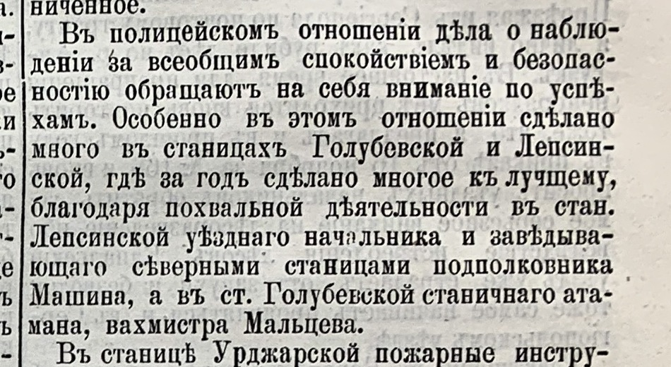
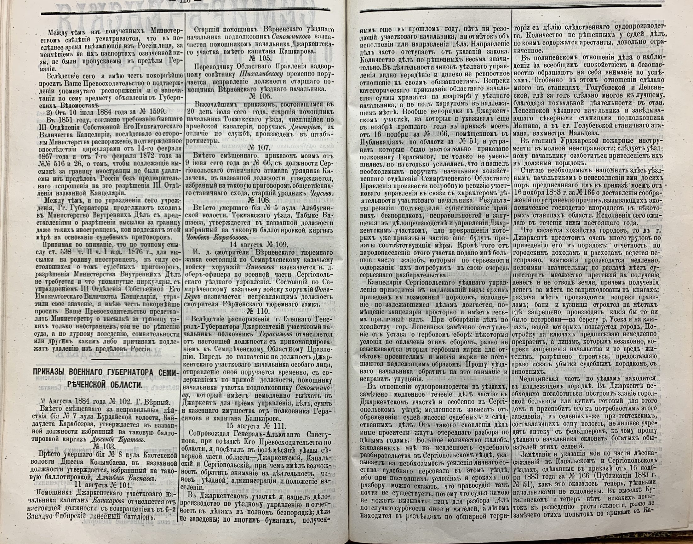

Zeitungsecke · 1884
Военный губернатор объезжает область, разносит Джаркентский участок за развал в делопроизводстве, и на этом фоне отдельно называет две станицы, где за год стало лучше. Одна из них Голубевская, и назван человек: станичный атаман, вахмистр Мальцев.

СОВ, № 51, 18 августа 1884 года, с. 126.
«Въ полицейскомъ отношеніи дѣла о наблюденіи за всеобщимъ спокойствіемъ и безопасностію обращаютъ на себя вниманіе по успѣхамъ. Особенно въ этомъ отношеніи сдѣлано много въ станицахъ Голубевской и Лепсинской, гдѣ за годъ сдѣлано многое къ лучщему, благодаря похвальной дѣятельности въ стан. Лепсинской уѣзднаго начальника и завѣдывающего сѣверными станицами подполковника Машина, а въ ст. Голубевской станичнаго атамана, вахмистра Мальцева.»
Кто этот Мальцев. Газета называет только фамилию и чин, но метрические книги прихода дают имя. В ноябре того же 1884 года восприемником записан «Атаманъ станицы Голубевской старшій урядникъ Евсей Косьминъ Мальцевъ», а годом раньше, в октябре 1883 года, он же значится «Станичный атаманъ урядникъ Евсей Косьминъ Мальцевъ». Атаман станицы в это время один, поэтому вахмистр Мальцев из приказа и Евсей Косьмин Мальцев из метрик, это один человек. Расхождение только в чине: в метриках он старший урядник, в газете вахмистр, следующая ступень. Либо его повысили в тот же год, либо канцелярия губернатора назвала чин по старшинству должности.
Откуда он взялся в станице. Мальцевы Борохудзирского прихода живут в выселке Подгорном, а Евсей Косьмин по метрикам записан иначе: в марте 1885 года он «старшій урядникъ выселка Карабулакскаго», а в записи о смерти его дочери, в марте 1884 года, сказано прямо: «Станицы Коксуйской выселка Карабулакъ урядника Евсевія Косьмина Мальцева дочь младенецъ Наталія». То есть атаман был прислан со стороны, с северного участка войска, и семьёй к голубевским Мальцевым отношения, скорее всего, не имел. Родство с подгорненскими Мальцевыми (Димитрий Григорьев и его сын Пётр Димитриев) не установлено.
Что стоит за похвалой. Тот же приказ, несколькими абзацами выше, описывает Джаркентский участок, в который входила Голубевская: по делам, заведённым ещё в прошлом году, нет ни резолюций участкового начальника, ни отметок об исполнении; количество нерешённых дел «весьма значительно»; казённые суммы вопреки прямому приказу хранятся на квартире у уездного начальника, а не под караулом. Губернатор пишет, что беспорядки не только не уменьшились, а усилились настолько, что он назначил полную ревизию участкового управления. На этом фоне похвала станичному атаману Голубевской звучит иначе: его выделяют не среди благополучных, а среди развала.
И человеческое. В марте 1884 года, за пять месяцев до этого приказа, у Евсея Косьмина умерла от дифтерии годовалая дочь Наталия. Год, за который «сдѣлано многое къ лучщему», он отработал, только что похоронив ребёнка.

Разворот целиком, для проверки контекста. Разбор Джаркентского участка стоит в соседних столбцах.
Источник: «Семирѣченскія областныя вѣдомости», № 51 от 18 августа 1884 года, с. 126, часть официальная. Подшивка за 1884 год из родового архива, найдено сплошным распознаванием годового тома.